This is the portfolio’s clearest “found a real bug” story. The diagram traces the exact HTTP status code the health endpoint returns under BOTH the buggy and fixed versions, and what Kubernetes actually does with each.

| Node | Location | What it does |
|---|---|---|
| STATUSCODE | app.py:health() | The actual bug: the original endpoint always returned HTTP 200 with a JSON body saying healthy: true/false — but a Kubernetes httpGet probe never parses the body, only the status code. The fix returns 503 when unhealthy. |
| FAILTHRESH | k8s/deployment.yaml (readinessProbe) | failureThreshold: 2 — deliberately fast to react, since readiness controls whether traffic reaches this pod at all. |
| LIVEFAILCHECK | k8s/deployment.yaml (livenessProbe) | failureThreshold: 5 — deliberately MORE tolerant than readiness, because liveness triggers a pod RESTART, which shouldn't happen just because a downstream dependency is temporarily degraded. |
| HALFOPENGAP | circuit_breaker.py + app.py:health() | A second, subtler real finding: once the breaker auto-transitions to HALF_OPEN after cooldown, it reads as healthy — but /health never actively re-pings Ollama, so with no real traffic flowing, a pod can look ready while its downstream is still genuinely down. |
Ollama is stopped, the circuit breaker correctly trips to OPEN — but kubectl get pods still shows the pod as Ready, because the probe only ever saw HTTP 200.
Same outage, same broken circuit — but now the probe sees 503, hits failureThreshold after 2 checks, and Kubernetes genuinely stops routing traffic to this pod. Verified live by stopping the real Ollama process.
STATUSCODE(503 when unhealthy) → PROBEOUTCOME(503) → FAILTHRESH(2/2) → NOTREADY → NOTRAFFICAfter the fix above, waiting past the breaker's cooldown showed the pod flip back to Ready — even though Ollama was still down — because nothing was sending real traffic to re-trigger a failure.
NOTREADY → [cooldown passes, no traffic] → HALFOPENGAP → STALEHEALTHY (documented, not silently patched)httpGet probe only reads the status code, so an unhealthy pod never left rotation until the fix (return 503 when unhealthy) was applied.failureThreshold: 2, controls traffic routing) while liveness is more tolerant (failureThreshold: 5, controls pod restarts) — deliberately, since a downstream outage shouldn't trigger a pod restart./health reports healthy without actively re-pinging the real dependency — so with no real traffic, a pod can look Ready while its downstream is still genuinely down.Kubernetes' httpGet probe type has one, and only one, success signal: an HTTP status code in the 200-399 range. It does not parse response bodies at all — that's a documented, deliberate simplicity in how the probe type works, not an oversight. So an endpoint that always returns 200 is, from Kubernetes' point of view, always healthy, regardless of what the body says — the JSON was correct information that simply wasn't going where it needed to go to have any effect. The lesson: an API's actual contract is defined by what its consumer actually reads, not by what the producer believes it's communicating — 'correct data in the wrong channel' is functionally equivalent to no data at all, which is exactly the gap this bug exposed and the 503-on-unhealthy fix closed.
Readiness and liveness answer fundamentally different questions with fundamentally different costs of being wrong: readiness asks 'should traffic go here right now', and being too tolerant there means real users hit a broken pod — the cost of over-tolerance is direct user impact, so it should react fast. Liveness asks 'is this process itself broken beyond repair, kill and restart it', and being too aggressive there means restarting a perfectly healthy pod just because a downstream dependency (something a restart can't fix anyway) is temporarily degraded — that's wasted disruption with zero benefit, since restarting the pod doesn't restart the dependency it's waiting on. Tolerant liveness isn't 'hiding failures longer', it's correctly recognizing that a downstream outage is not a liveness problem, and using readiness (which does react fast) to handle exactly that case instead.
The fix: make /health actively probe the real dependency (a lightweight real call to Ollama, not just reading the circuit breaker's cached state) whenever the breaker is in HALF_OPEN specifically — CLOSED and OPEN states can trust cached state (CLOSED means recent calls succeeded; OPEN means recent calls failed and cooldown hasn't elapsed), but HALF_OPEN's whole premise is 'we don't know yet, need one real probe' and currently nothing forces that probe to happen if there's no organic user traffic. The cost: the health endpoint goes from a cheap, always-fast state read to occasionally making a real, potentially-slow call to the dependency — which changes the health endpoint's own latency/failure profile, and needs its own timeout so a hung dependency doesn't hang the health check itself, ironically risking the exact readiness-probe-timeout problem this project already had to reason carefully about.
I'd run a chaos-style validation in a real multi-replica staging deployment: deliberately kill the downstream dependency for one specific pod (e.g. via a network policy or sidecar fault injection targeting just that pod), and directly measure two things against the Service's actual endpoint list — the time from dependency failure to that pod's removal from the Endpoints/EndpointSlice, and the request error rate observed by clients during that window (should drop to near-zero once removal completes, proving traffic actually stopped routing there). I'd repeat that under real production-level request volume, not idle load, since Kubernetes' failureThreshold counts probe attempts, not wall-clock time, and probe interval combined with realistic traffic patterns determines the actual user-facing blast radius before removal completes.
Because from the perspective of anyone actually depending on this system — an on-call engineer looking at kubectl get pods, an SLO dashboard, a load balancer's routing decision — 'the pod says Ready' and 'the pod is actually serving correctly' are supposed to be the same fact, and when they diverge, every downstream consumer of that signal is now silently wrong. It doesn't matter that the internal circuit breaker logic was itself functioning correctly (it genuinely knew it was in the OPEN state) — the bug was entirely in the translation layer between 'what the app knows internally' and 'what Kubernetes can observe externally', and that translation layer is exactly as load-bearing as the internal logic itself, since nothing outside the process can act on internal state it can't observe.